Minimal Light
Same architecture. A different visual treatment.

Style Showcase makes diagrams look right. Layout Showcase makes diagram purpose obvious. Every preview runs the actual diagram's icon and flow animations while visible, with a complete static fallback.
A seven-second recording of the actual explanation mode: focus, camera movement, relation labels, and step controls. This is a generic architecture sample, not a verified production system.
Try the interactive explanationRecording detailsExplore stylesExplore layouts
From Document to Answer: follow ingestion and basic Chat across three logical layers. 10 nodes · 13 relations · two styles, one architecture.
Pinned to Dify 1.17.0. Source-reading draft: independent semantic review is pending, and Dify runtime has not been tested.
Same architecture. A different visual treatment.
Same architecture. A different visual treatment.

The current frozen Diagram Core v1 and Illustrated 2.5 public releases, each with complete static and automatic-motion coverage.
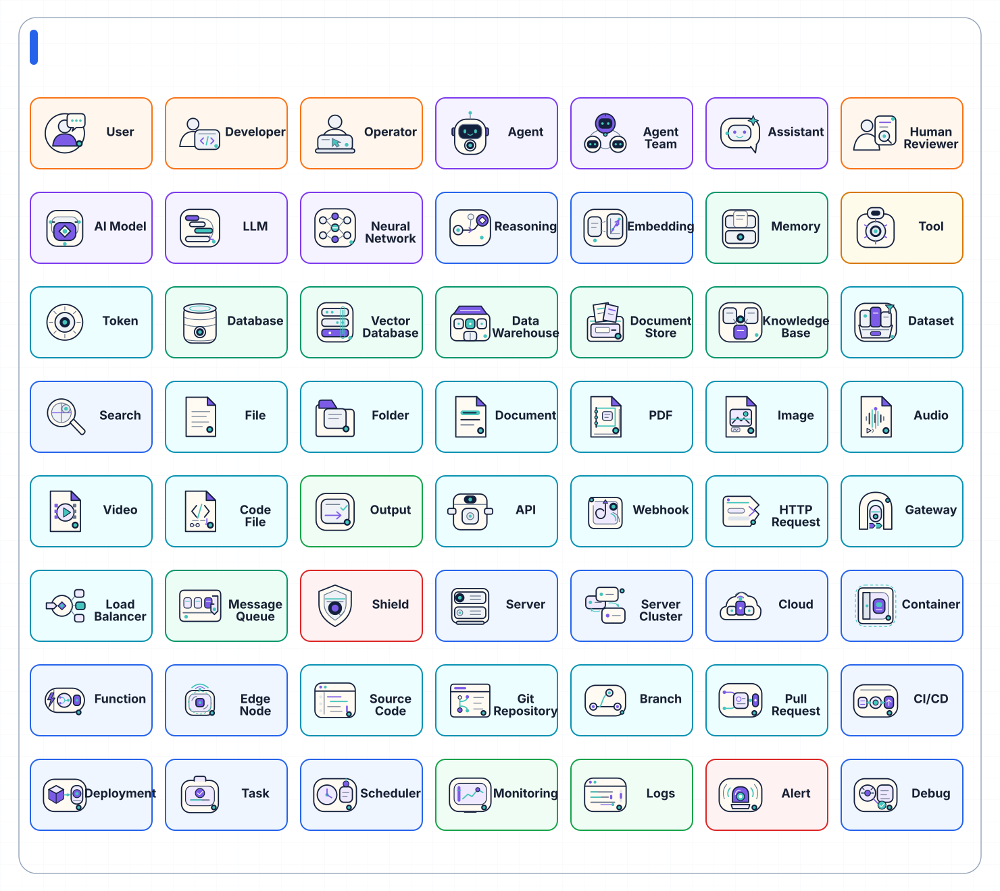
Diagram Core v1
Infrastructure diagrams, Architecture systems, Technical operations
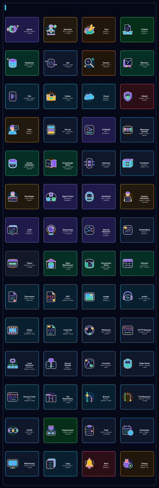
Illustrated 2.5
AI explainers, Character-led workflows, Animated presentations
One signature case for every bundled visual style.
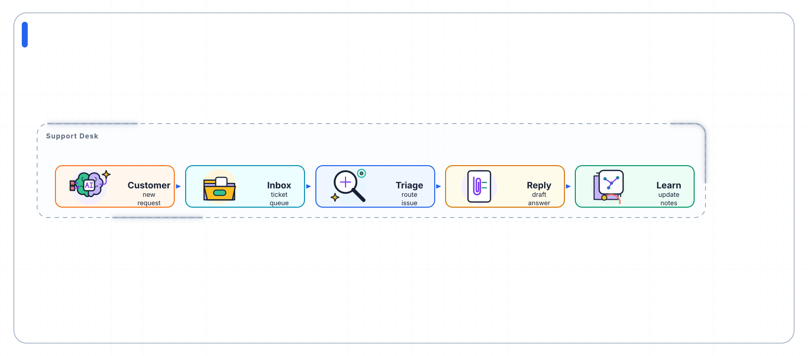
Customer Support Triage
SaaS, Operations, Support flows

Realtime AI Ops Mesh
AI ops, Realtime systems, Agent meshes

MCP Server Architecture
Architecture, Protocols, Cloud boundaries
Feature Priority Board
Roadmaps, Priority boards, Product planning

Incident Response Runbook
Incident response, Debugging, Runbooks

Product Discovery Workflow
Product discovery, Docs, Workflow notes

AI Growth Funnel
Growth funnels, Journeys, Presentation flows

Research Reasoning Loop
Reasoning, Research loops, Planning

Evaluation Pipeline
Evaluation, Benchmarks, Quality gates

Executive Signal Network
Executive views, Signal maps, Strategy

Creative Agent Studio
Creative tools, Multimodal agents, Studio flows

Semantic Delivery Pipeline
Technical explainers, Semantic workflows, Warm presentations

Attention Teaching Flow
Teaching, Attention flows, Explainers
One standard teaching case for every semantic layout preset.
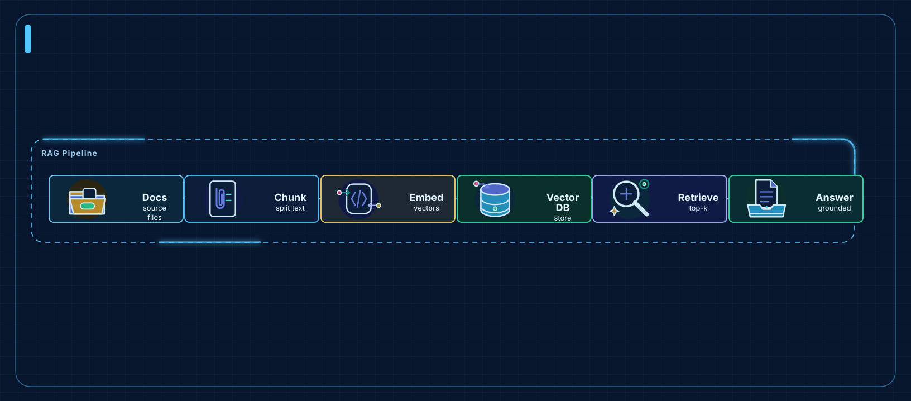
RAG Ingestion Pipeline
ETL, Build steps, AI pipelines
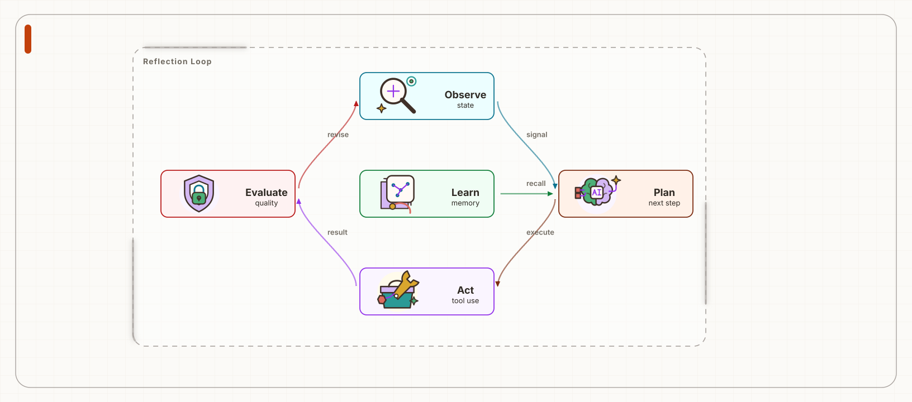
Agent Reflection Loop
Feedback loops, Agent learning, Refinement
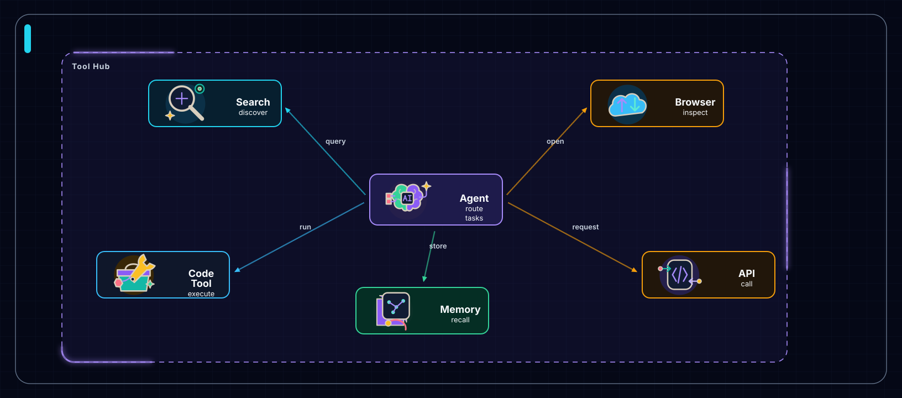
Agent Tool Hub
Tool routers, Agent hubs, Capability maps
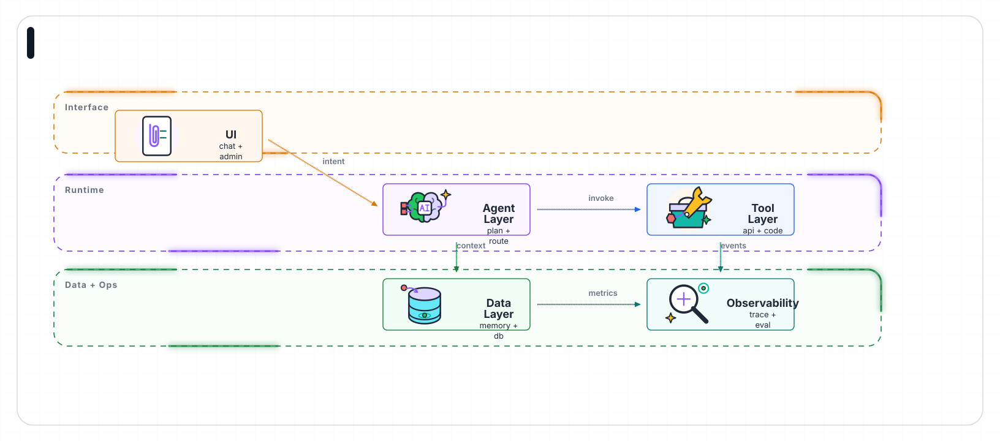
LLM App Architecture Layers
System layers, Architecture, Ownership
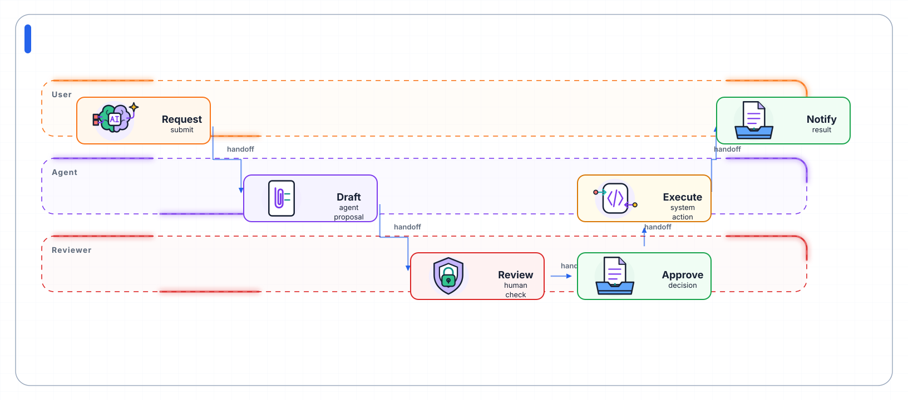
Human-in-the-loop Approval Flow
Handoffs, Approvals, Responsibility
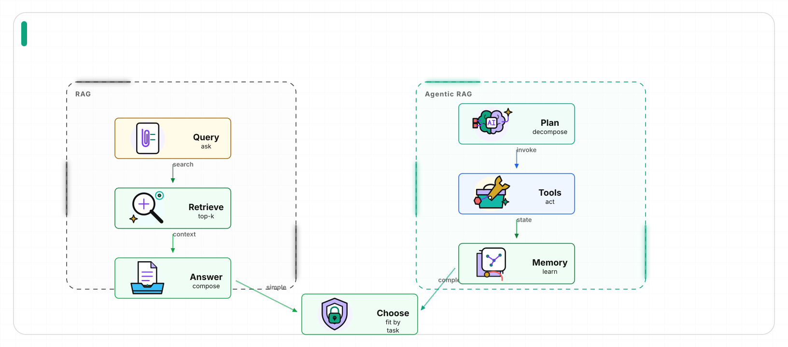
RAG vs Agentic RAG
Tradeoffs, Before after, Architecture decisions
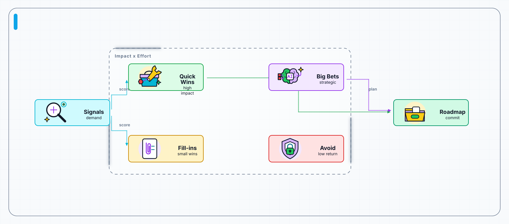
AI Feature Priority Matrix
Prioritization, PM planning, Roadmaps
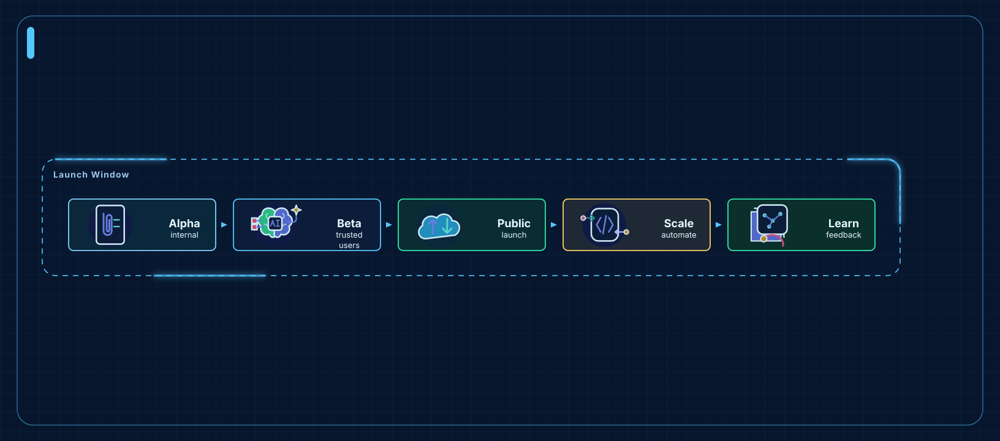
AI Product Launch Roadmap
Roadmaps, Milestones, Release planning
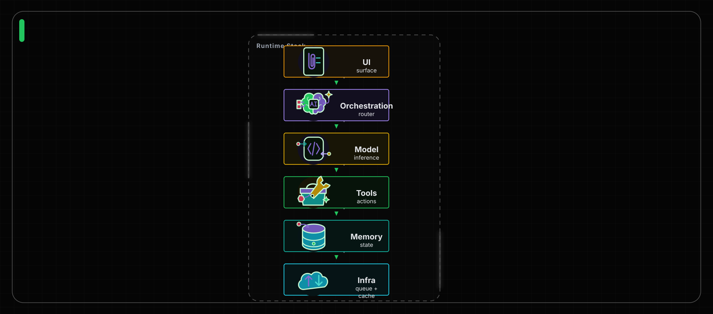
AI Runtime Stack
Runtime layers, Infrastructure, Dependencies
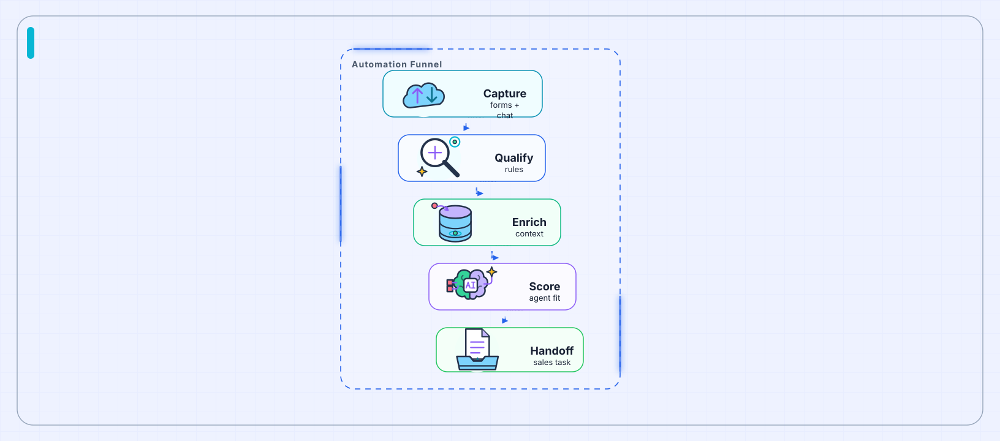
Lead-to-Agent Automation Funnel
Qualification, Conversion, Automation
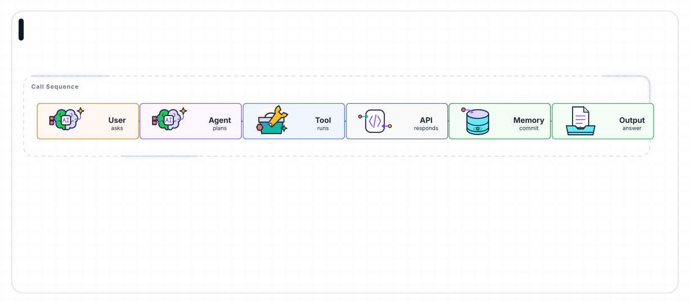
API Tool Calling Sequence
Request chains, Tool calls, Protocols
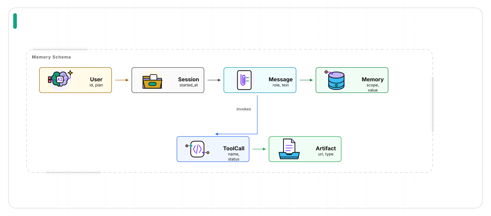
Agent Memory Data Model
Data models, Relationships, Memory schemas
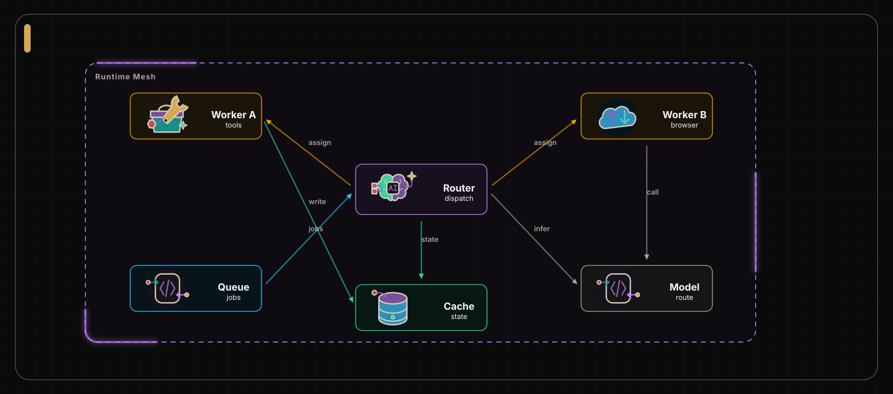
Distributed Agent Runtime Mesh
Distributed systems, Runtime meshes, Routing
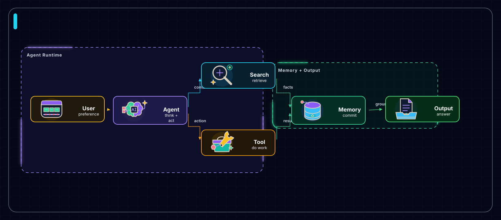
Personalized Agent Memory Flow
Agent memory, Retrieval, Grounded output
Agent Loop Runtime Architecture
Agent internals, Governed tool loops, Memory and safety
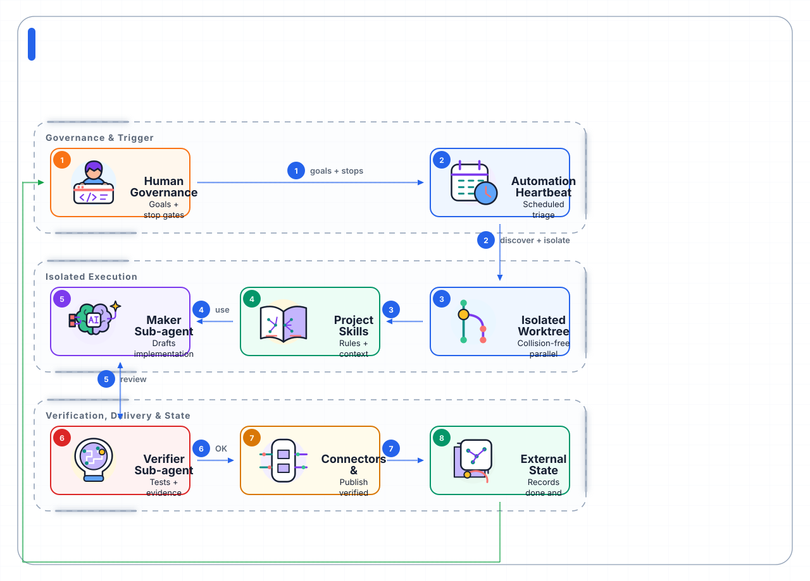
Loop Engineering Operating Architecture
Governed loops, Layered execution, External state
The frozen high-fidelity runtime baseline. Open the catalog to review current semantics, part IDs, stage effects, and change-control rules.
Open runtime motion catalogOpen live overview
Brain Think Pulse
Icon: agent
Think, Decide, Confirm
Operator Type Focus
Icon: operator
Focus, Type, Resolve
Search Scout Find
Icon: search
Scout, Scan, Find
Tool Kit Action
Icon: tool
Ready, Act, Confirm
API Signal Return
Icon: api
Request, Return, Settle
Memory Index Commit
Icon: memory
Index, Commit, Recall
Output Envelope Reveal
Icon: output
Reveal, Deliver, Confirm
File Note Write
Icon: file
Note, Write, Settle
Folder File Store
Icon: folder
File, Store, Ready
Cloud Uplink Ready
Icon: cloud
Uplink, Send, Ready
Shield Guard Confirm
Icon: shield
Guard, Scan, Confirm
Token Intent Ready
Icon: token
Intent, Orient, Ready
Bucket Ingest Confirm
Icon: database
Ingest, Settle, Confirm
Agent Think Act
Icon: agent
Think, Decide, Act
Search Discover
Icon: search
Scan, Find, Lock target
API Request Response
Icon: api
Request, Response, Status
Database Write
Icon: database
Write, Commit, Confirm
Memory Commit
Icon: memory
Context, Recall, Commit
Tool Run
Icon: tool
Invoke, Execute, Resolve
Token Intent
Icon: token
Intent, Signal, Classify
Output Reveal
Icon: output
Result, Confirm, Complete
File Lines
Icon: file
Document, Parse, Extract
Folder Open
Icon: folder
Collection, Open, Load
Cloud Upload
Icon: cloud
Upload, Sync, Deploy
Shield Check
Icon: shield
Validate, Guard, Approve
Compare the same Character v1 flow in Default Character, Deep Tech, and Teaching Sketch Character.